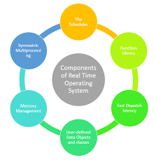

A real-time operating system (RTOS) is an operating system (OS) intended to serve real-time applications that process data as it comes in, typically without buffer delays. Processing time requirements (including any OS delay) are measured in tenths of seconds or shorter increments of time. A real-time system is a time-bound system which has well-defined, fixed time constraints. Processing must be done within the defined constraints or the system will fail. They either are event-driven or time-sharing. Event-driven systems switch between tasks based on their priorities, while time-sharing systems switch the task based on clock interrupts. Most RTOSs use a pre-emptive scheduling algorithm.

A key characteristic of an RTOS is the level of its consistency concerning the amount of time it takes to accept and complete an application's task; the variability is 'jitter'. A 'hard' real-time operating system (Hard RTOS) has less jitter than a 'soft' real-time operating system (Soft RTOS). The late answer is a wrong answer in a hard RTOS while a late answer is acceptable in a soft RTOS. The chief design goal is not high throughput, but rather a guarantee of a soft or hard performance category. An RTOS that can usually or generally meet a deadline is a soft real-time OS, but if it can meet a deadline deterministically it is a hard real-time OS.
An RTOS has an advanced algorithm for scheduling. Scheduler flexibility enables a wider, computer-system orchestration of process priorities, but a real-time OS is more frequently dedicated to a narrow set of applications. Key factors in a real-time OS are minimal interrupt latency and minimal thread switching latency; a real-time OS is valued more for how quickly or how predictably it can respond than for the amount of work it can perform in a given period of time.
See the comparison of real-time operating systems for a comprehensive list. Also, see the list of operating systems for all types of operating systems.